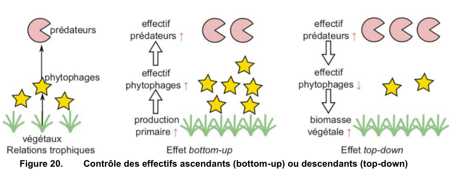

Qu’est-ce que c’est qu’une prairie ?
Une prairie est caractérisée par sa formation végétale majoritairement herbacée, avec quelques arbres. Les alpages représentent un type d’écosystème “prairie” spécifique.
Les prairies boréales ou les savanes sont des pairies sans arbres. Les prairies tempérées elles peuvent être colonisées par des arbres.
Prairies Européennes
- Toujours vert
- D’origine anthropique
- Maintenues par l’homme
Une prairie: une formation herbacée continue
La biocénose : un ensemble de communautés
Prairie humide → Plantes Hydrophiles Prairie Très fertilisée → plantes Eutrophiles
Les communautés résultent d’un processus sélectif lié au condition du milieu et aux stratégies fonctionnelles des espèces. Le terme “stratégie” test extrêmement mal choisi. L’adaptation au milieu résulte de la selection naturelle. Il n’y a pas de finalité ou de stratégie au sens ou on l’entend pour l’homme.
Une flore herbacée diversifiée
L’écosystème prairial comporte deux familles caractéristiques de plantes :
Il faut savoir reconnaître et différencier les poacées, fabacées, etc..
Différents traits d’histoire de vie au sein des poacées fourragères
- La phénologie (précoce / tardive)
- La vitesse de croissance
- L’Appétence
Etude de quelques organismes
La vache
La vache consomme de la matière organisme issue des plantes pour survivre et se reproduire. Elle utilise aussi du dioxygène () et rejette du Dioxyde de carbone ().
Quand on à bu beaucoup de bière, l’eau est passée par le sang.
Des organismes soumis aux contraintes en lien avec leur milieu et leur mode de vie
Les contraintes du milieu terrestre :
- Pas d’eau (desséchant)
- Milieu très changeant
- Milieu peu porteur
| Angiospermes | Mammifères | Insectes | |
|---|---|---|---|
| Milieu desséchant | - Cuticule protectrice imperméable - Échanges gazeux internalisés - Fécondation interne | - Peau protectrice et imperméable (kératine et sébum) - Échanges gazeux internalisés - Fécondation interne et viviparité | - Tégument protecteur (cuticule imperméable) - Échanges gazeux internalisés - Fécondation interne |
| Milieu très changeant | - Turgescence associée à une paroi rigide - Lignine | - Squelette interne associé à des muscles - Membres chiridiens | - Squelette externe associé à des muscles - Appendices locomoteurs permettant la marche, le saut et le vol. |
| Milieu peu porteur | - Adaptation à la mauvaise saison passée dans le sol sous forme de graine et/ou de structures souterraines. | - Homéothermie - Viviparité | - Saisonnalité de la reproduction |
tétrapodes
Des adaptation variées à la vie terrestre
La feuille
La feuille comporte de nombreuses adaptation au milieu terrestre. D’abord, à travers les l’épiderme et la cuticule, des stomates et enfin des parenchymes chlorophylliens lacuneux, qui permettent des échanges gazeux internalisés.
Le parenchyme chlorophyllien est dit palissadique car il est constitué de cellules agencées parallèlement qui protègent l’épiderme inférieur.
Téguments animaux
Les tégument sont les couchent protectrices qui permettent à l’être vivant de s’isoler du monde extérieur.
Peau des humain
La peu des mammifères est un tégument complexe, il est composé de different éléments :
- Les poils, qui permettent une forme d’isolation thermique et qui sont composés de kératine.
- Les glandes sudoripares, productrices de sueur (échanges thermiques)
- Les glandes sébacées qui produisent le sébum qui forme une couche imperméable et protectrice. (situées proches des poils)
Le tégument des mammifère est un épiderme pluristratifié, il se compose ainsi de plusieurs couches de cellules desquamante.
Tégument des insectes
Le tégument des insectes est un exosquelette. Il est aussi pluristratifié, et protégé par des couches externe qui composent la cuticule appelées endocuticule, exocuticule et epicuticule.
Le tégument des insectes est aussi imperméabilisé par un processus de sécrétion de cire imperméable par des glandes.
De plus, il aussi à une fonction de respiration à travers des trachées.
La vache
La rumination
La peau de la vache, un tégument adapté au milieu terrestre
- Épiderme pluristratifié (plusieurs couches de peau)
- Couche desquamante (qui se renouvelle) riche en kératine et imprégnée de sebum imperméabilisant (glandes sébacées)
- Présence de poils produit par l’épiderme associés à un muscle érecteur et à une glande sébacée
- Production de sueur au niveau de la glande sudoripare
- Couche adipeuse
Une glande c’est une structure qui secrète ce qu’elle produit.
Criquet

Le criquet est phytophage (il mange des plantes)
Adaptations à la vie fixée
- La fleur : dispersion du pollen
- La graine: dissémination des individus
- Les grandes surfaces d’échange foliaires et racinaires
Fonctions du vivant
Un organisme doit remplir trois fonctions :
- Fonction de nutrition
- Fonctions de reproduction
- Fonction de relation
Nutrition
Les aliments sont composés de nutriments: Cellulose → cellulase → Glucose Amidon → amylase → Glucose
Les aliments ne sont par absorbables, ils doivent être digérés en nutriments.
Afin de digérer la cellulose, la vache emploie un processus complexe de rumination.
L’analyse du vivant passe par l’étude d’une classification du vivant.
L’estomac de la vache héberge de nombreux représentant des bactéries, des archées et des eucaryotes qui contribuent à la fermentation des aliments absorbés.
Notion d’holobionte
Les relations interspécifiques
Différents types de relations interspécifiques
Les relations interpécifiques sont des interactions entre des espèces différences qui n’occupe souvent pas la même fonction au sein de l’écosystème. Elle peuvent être positives (symbiose), négatives ou neutres.
Relations interspécifiques et valeur sélective
La valeur sélective, dite aussi fitness, correspond à la capacité d’un individu ou d’un espèce à survivre ou à se reproduire.
Dans le cas d’une symbiose (Exemple de la vache), la relation augmente la valeur sélective des deux espèces.
| Positif | négatif | neutre | |
|---|---|---|---|
| positif | symbiose / mutualisme | prédation / parasitisme | commensalisme |
| négatif | compétition | ammensalisme | |
| neutre | neutralisme |
Exemples
Pissenlit → Abeille : Mutualisme (++) Trèfle → Rhizobium : Symbiose (++) Vache → Renard : Neutralisme (..) Vache → Bousier : Commensalisme (.+) Vache → Abeille : Neutralisme (..) Vache → Douve du foie : Prédation (-+)
Relation trophiques
Relations à bénéfices réciproques
Note: La symbiose se différencie du mutualisme par un aspect temporel, la symbiose dure plus longtemps.
Exemples
- Nodosité
- Mycorhize
- Exemple de la vache
- Pollinisation
Les relations à bénéfices réciproques amène une augmentation de la valeur sélective des deux organismes en jeu, souvent à travers une facilitation des échanges trophiques.
La syntrophie est une relation de symbiose au cours de laquelle un organisme se nourrit des déchets rejetés par un autre.
Prédation et parasitisme
Prédation
La prédation est un relation asymétrique dans laquelle on distingue deux rôles :
- La Proie qui est consommée lors du processus
- Le prédateur qui consomme la proie.
Le prédateur est le bénéficiaire de la relation
Parasitisme
Le parasitisme se caractérise par l’action spoliatrice du parasite. Contrairement au prédateur il ne tue pas sa proie mais il va affecter négativement ses fonction de nutrition. Pour le parasite, l’hôte est à la fois une source de nourriture et un milieu de vie.
Ainsi, le parasite vit dans un biotope mortel, il est condamné à mourir avec son hôte. Ces contraintes poussent les organismes parasitiques à adopter un système de multiplication reproductive rapide afin de subsister en tant qu’espèce.
Le parasitisme et la prédation augmentent la valeur sélective du prédateur ou du parasite au détriment de la proie et de l’espèce parasitée.
Compétition inter-spécifique
Compétition par exploitation de ressource
Des espèces sont en compétition pour des ressources nécessaire à leur fonctionnement.
Compétition par interférence
Une espèce va directement produire des composé chimiques qui nuisent à une autre espèce.
Exclusion compétitive
La compétition peut mener à des mécanismes d’exclusion.
La domestication
La domestication est une relation inter-spécifique particulière. L’homme est la vache en est un exemple.
Comment caractériser cette relation ?
On peut parler d’une certaine manière de symbiose, mais aussi de prédation.
Chaîne et réseau trophique
On distingue différents niveaux trophiques
- Les producteurs primaires (autotrophes)
- Les consommateurs primaires ou producteurs secondaires
Tout ces organisme produisent de la matière organique morte qui est consommée par les hétérotrophes décomposeurs.
Flux de matière et d’énergie au sein de écosystème prairial
La Biomasse est souvent rapportée à une surface pour étudier les écosystèmes.
On mesure la vitesse d’augmentation de la biomasse.
Au sein d’un écosystème, la matière est recyclée mais l’énergie est amenée de l’extérieur est est transférée d’un niveau trophique à l’autre mais avec beaucoup de pertes. (On constate environ 90% de perte lors du passe d’un niveau trophique à l’autre.)
Efficience écologique
L’efficience écologique d’un consommateur correspond au quotient entre l’énergie consommée sous forme de matière organique et l’énergie produite.
En général, . Cette efficience est en générale plus faible pour les homéotherme et les herbivores.
Les pertes proviennent des pertes d’énergie liées au catabolisme (matière brûlée pour produire de l’énergie et assurer la subsistance de l’animal.)
Symbiose et court circuit trophique
Dans l’exemple de la vache, l’herbe est consommée d’abord par des micro-organismes, puis la vache absorbe les produits de cette consommation par ces cellules ciliées. Dans ce cas, le rendement d’un niveau trophique à l’autre (bactéries → Vache) est anormalement élevé.
En général, dans le cas d’un symbiose, le passage de niveaux trophiques entre les symbiotes et très efficace.
Flux de matière au sein des agrosystèmes
Un agrosystème est un écosystème caractérisé par de forte interventions humaines, notamment à travers l’exportation de biomasse et l’ajout d’intrants (engrais, amendements, énergie).
Influence des relations trophiques sur les effectifs
Le contrôle des effectifs d’un écosystème se fait par un double mécanisme :
- Ascendant (bottom-up)
- Descendant (top-down)
Ainsi, les espèce en bas de l’échelle trophique contrôlent les effectifs des espèces au dessus (leur prédateurs).
De plus, les espèces en haut de l’échelle tropique contrôlent les effectifs des espèces en dessous (leur proies)

Ces mécanismes garantissent un équilibre dynamique semblable aux équilibre chimiques.
Le rôle d’une espèce dans un écosystème est défini par ses rapports aux autres espèces.
Intervalles de tolérance
Pour chaque paramètre d’un milieu, il y à pour toute espèce un intervalle optimal et un intervalle de tolérance.
Une niche écologique est donc représenté par l’intersection de tout les zones optimales pour chaque paramètre pris en compte de l’écosystème.
- Pour deux paramètres, on obtient un cercle.
- Pour trois paramètres une sphère.
- Pour n-paramètres un hyper-volume
Certains organismes on des niches potentielles très larges, ils sont généralistes alors que d’autres ont des niches très étroites.
Les organismes qui ont des exigence très strictes sont souvent de très bon compétiteurs alors que ceux qui ont des intervalles de tolérances très large sont qualifiés d’opportunistes et ont une stratégie de colonisation du milieu.
Deux espèces de peuvent pas occuper la même niche écologique.
Espèce ingénieur et clé de voûte
Les plus grands ingénieurs des écosystèmes sont les lombrics.
En absorbant et rejetant de la terre, les lombrics ont une forte influence sur la structure et la composition des des sols. Ils permettent un enfouissement de la matière organisme, l’aération des sols et influences le microbiote des sols
La vache elle est une espèce clé de voûte : elle à une grande influence sur la composition des sols et la répartition des espèces végétales. Ainsi, elle permet de maintenir la prairie en empêchant la formation de forêt. Les espèces clé de voûte sont les espèces qui maintiennent un écosystème. Si une espèce clé de voûte disparaît l’écosystème est un péril.
Toutes les espèces ingénieurs ne sont pas des espèces clé de voûte, mais toutes les espèces clé de voûte sont des espèces ingénieur.